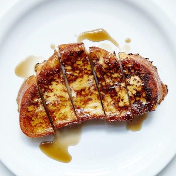

French Toast

Description
With an eggy soak enriched with both milk and heavy cream, this superlative French toast recipe winks at bread pudding.
Ingredients
-
6 large eggs
-
¾ cup heavy cream
-
¾ cup whole milk
-
¼ cup sugar
-
Pinch of kosher salt
-
6 ¾-inch-thick slices challah, brioche, or Pullman loaf
-
2 tablespoons unsalted butter, divided, plus more for serving
-
2 tablespoons vegetable oil, divided
-
Pure maple syrup, jam, or powdered sugar (for serving)
Steps
-
Preheat oven to 250°. Lightly beat eggs, cream, milk, sugar, and salt in a large shallow baking dish (a lasagna pan is perfect). Add bread, turn to coat, then press down gently on bread until you feel it start to soak up custard mixture—this is key for a luscious, not dry, texture. Let soak, 10 minutes.
-
Flip bread and soak on second side, pressing down gently from time to time, until bread is saturated but not soggy, another 10 minutes or so.
-
Heat 1 Tbsp. butter and 1 Tbsp. oil in a large skillet over medium heat. When foaming subsides, carefully lift 3 slices of bread from custard, letting excess drip back into dish, and cook in skillet until golden brown and center of toast springs back when pressed, about 2 minutes per side. Transfer toast to a wire rack set inside a rimmed baking sheet and keep warm in oven while you cook remaining slices of bread with 1 Tbsp. butter and remaining 1 Tbsp. oil.
-
Serve French toast with butter, maple syrup, jam, and/or powdered sugar.
Go Back Home